กิจกรรมเพื่อสังคมและพนักงาน
ติดตามความเคลื่อนไหว กิจกรรม CSR และสวัสดิการของบริษัทฯ
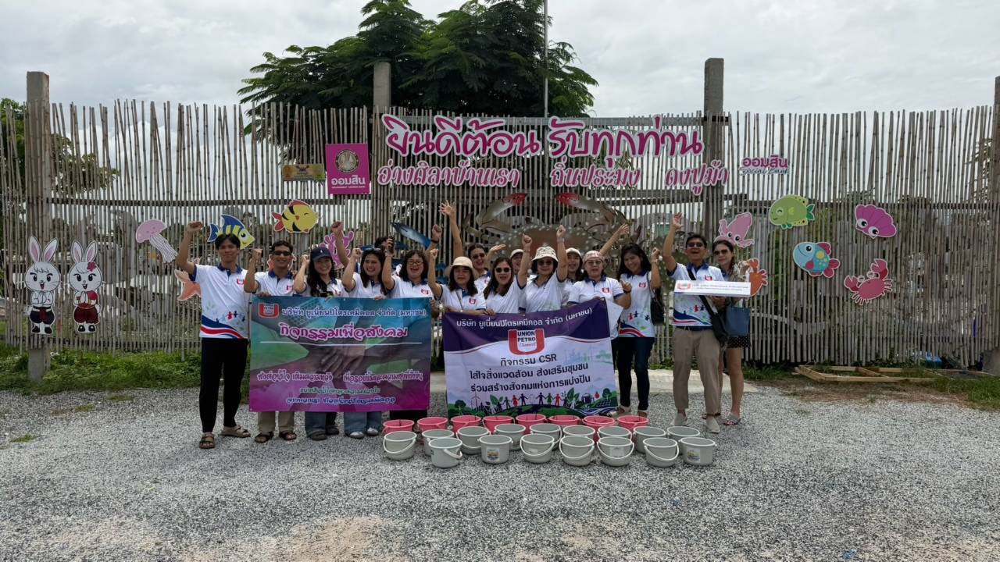
โครงการปล่อยปูม้าคืนสู่ธรรมชาติ
โครงการอนุรักษ์พันธุ์ปูและฟื้นฟูระบบนิเวศชายฝั่ง ร่วมอนุบาลและปล่อยปูคืนสู่ธรรมชาติ เพื่อส่งเสริมการฟื้นฟูทรัพยากรทางทะเล
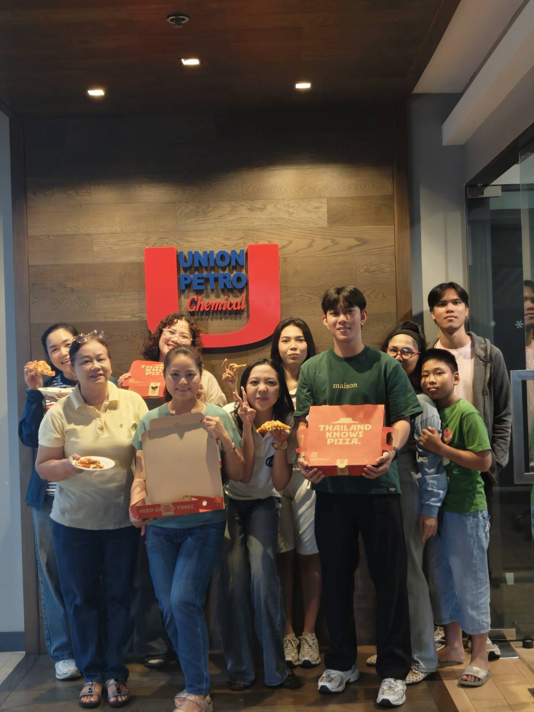
โครงการอาหารกลางวัน Happy Meal, Happy Team
จัดเลี้ยงอาหารกลางวันสำหรับพนักงานที่มาปฏิบัติงานในวันเสาร์ เพื่อสร้างขวัญกำลังใจและส่งเสริมความสัมพันธ์ที่ดีภายในทีม
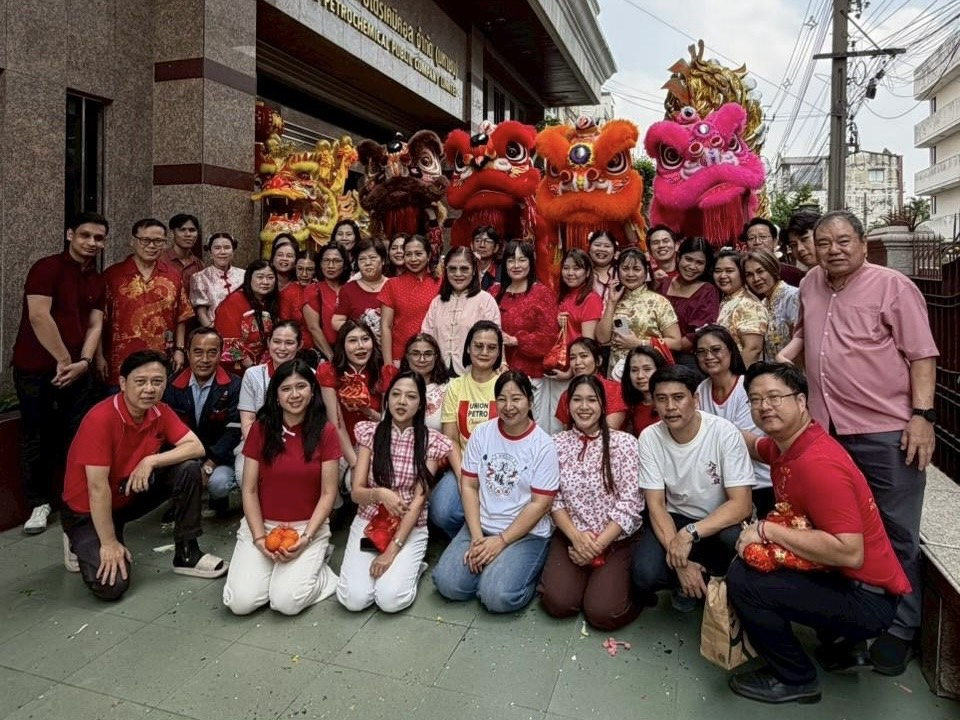
รอรูปภาพ';">กิจกรรมเฉลิมฉลองเทศกาลตรุษจีน
ร่วมสืบสานวัฒนธรรมและสร้างความสัมพันธ์อันดีภายในองค์กร เนื่องในเทศกาลตรุษจีน
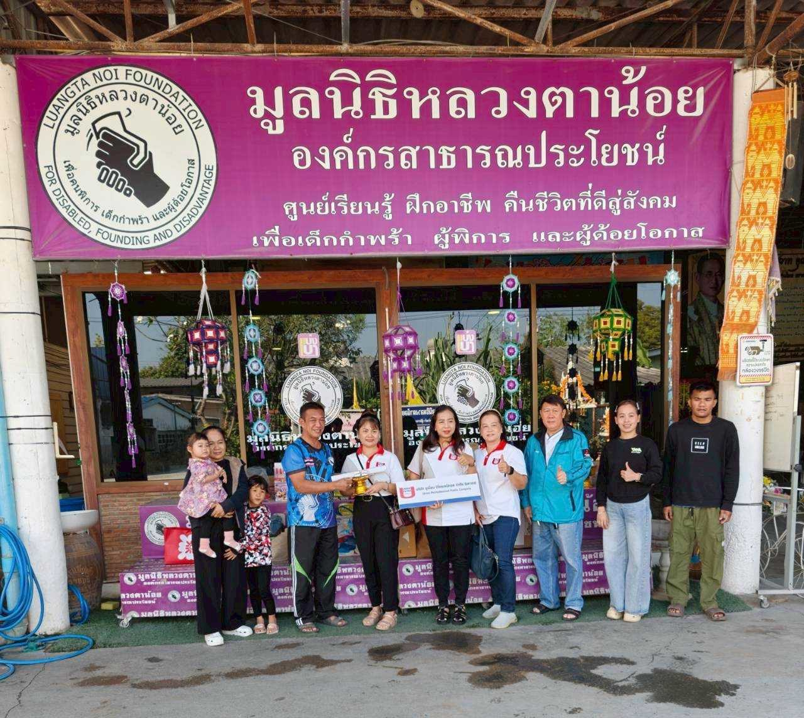
รอรูปภาพ';">มอบเงินสนับสนุนมูลนิธิหลวงตาน้อย
ร่วมสนับสนุนมูลนิธิหลวงตาน้อย เพื่อช่วยเหลือและส่งเสริมคุณภาพชีวิตของผู้พิการ
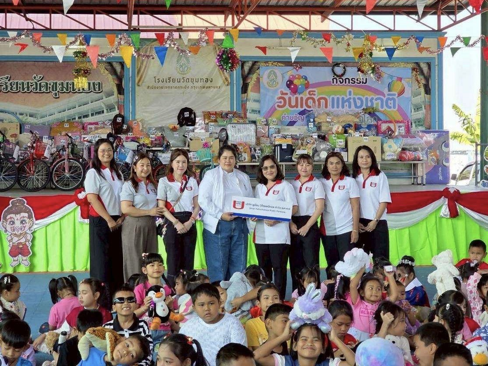
รอรูปภาพ';">สนับสนุนกิจกรรมวันเด็กแห่งชาติ โรงเรียนวัดขุมทอง
ร่วมบริจาคเงิน อาหาร เครื่องดื่ม และขนม เพื่อสนับสนุนกิจกรรมวันเด็กแห่งชาติ ประจำปี 2569 ของโรงเรียนวัดขุมทอง เขตวัฒนา กรุงเทพมหานคร
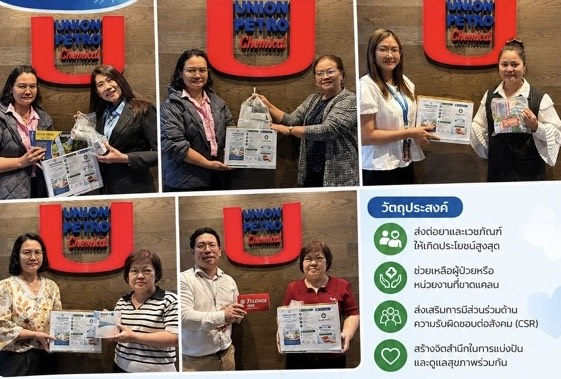
รอรูปภาพ';">โครงการ “ส่งต่อยา ส่งต่อชีวิต”
ร่วมส่งต่อยาและเวชภัณฑ์ที่จำเป็นให้แก่ผู้ที่ต้องการ เพื่อลดการสูญเสียยาที่ยังมีประโยชน์และส่งเสริมการเข้าถึงยาที่จำเป็นอย่างทั่วถึง
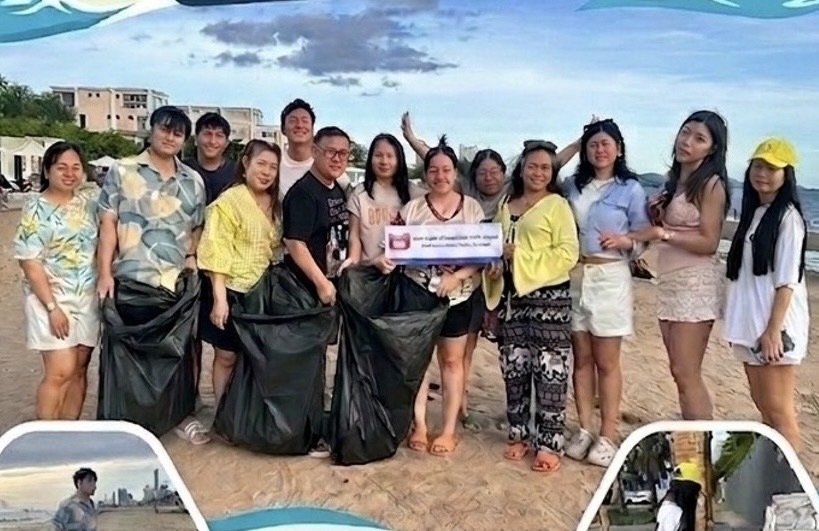
รอรูปภาพ';">กิจกรรมเก็บขยะชายหาดจอมเทียน
พนักงานร่วมกันเก็บขยะบริเวณชายหาดจอมเทียน เพื่อส่งเสริมการอนุรักษ์สิ่งแวดล้อมและสร้างจิตสำนึกในการดูแลพื้นที่สาธารณะร่วมกัน
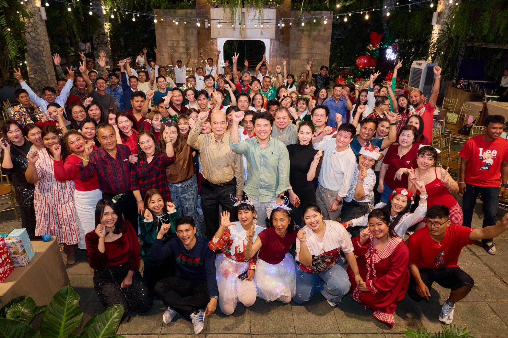
รอรูปภาพ';">กิจกรรมเลี้ยงฉลองเทศกาลคริสต์มาสและวันขึ้นปีใหม่
ร่วมเฉลิมฉลองเทศกาลคริสต์มาสและวันขึ้นปีใหม่ร่วมกันทั้งบริษัท เพื่อสร้างความสุข ความสัมพันธ์ที่ดี และความสามัคคีภายในองค์กร
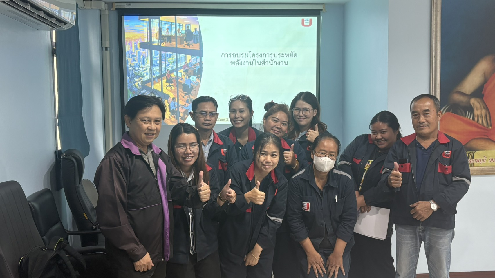
รอรูปภาพ';">อบรมประหยัดพลังงานในสำนักงาน
จัดอบรมให้ความรู้พนักงานเกี่ยวกับการประหยัดพลังงานในสำนักงาน เพื่อส่งเสริมการใช้ทรัพยากรอย่างคุ้มค่าและลดผลกระทบต่อสิ่งแวดล้อม
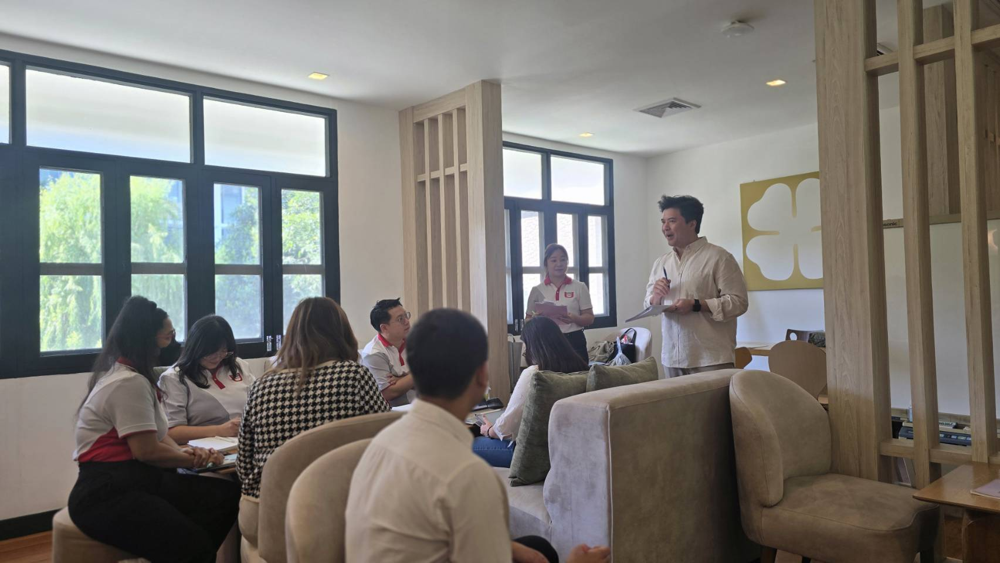
รอรูปภาพ';">การสื่อสารภายในองค์กร
บริษัทฯ ได้สร้างการมีส่วนร่วมในการปฏิบัติงานทุกระดับด้วยการจัดตั้งคณะกรรมการความปลอดภัย อาชีวอนามัย และสภาพแวดล้อมในการทำงาน ซึ่งประกอบด้วยผู้แทนในระดับบังคับบัญชาและผู้แทนลูกจ้าง เพื่อร่วมกันสำรวจสภาพการทำงานที่ไม่ปลอดภัย พิจารณาแผนงานและนโยบายด้านความปลอดภัย อาชีวอนามัย และสิ่งแวดล้อม การติดตามการดำเนินงานให้สอดคล้องกับกฎหมาย รวมถึงการสื่อสารเพื่อป้องกัน

การจัดกิจกรรมส่งเสริมสุขภาพ
บริษัทฯ จัดให้มีการตรวจสุขภาพสำหรับพนักงานเข้าใหม่ การตรวจสุขภาพประจำปีให้กับพนักงานทุกคนตามปัจจัยเสี่ยงในงานและเฝ้าระวังผลกระทบที่อาจเกิดจากการปฏิบัติงาน เช่นการตรวจสมรรถภาพปอด การตรวจสมรรถภาพการได้ยิน การตรวจสายตาอาชีวอนามัย และการตรวจหาสารโลหะหนักในร่างกาย ภายใต้ระบบฐานข้อมูลด้านสุขภาพและการเจ็บป่วยของพนักงาน นอกจากนี้ ยังดำเนินกิจกรรมส่งเสริมสุขภาพตามหลัก Happy Workplace
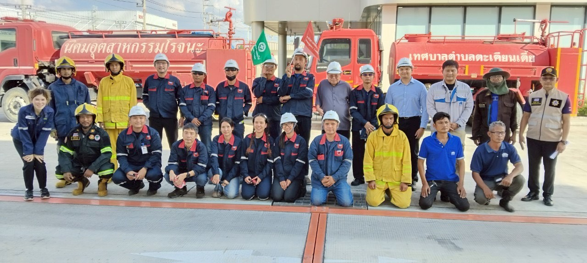
รอรูปภาพ';">การสร้างความตระหนักและวัฒนธรรมด้านความปลอดภัยขององค์กร
การสร้างความตระหนักและวัฒนธรรมด้านความปลอดภัยเป็นหัวใจสำคัญของการดำเนินธุรกิจในอุตสาหกรรมเคมีภัณฑ์ บริษัทฯ จึงให้ความสำคัญกับการปลูกฝังแนวคิด “ความปลอดภัยเป็นหน้าที่ของทุกคน” ผ่านการฝึกอบรมอย่างต่อเนื่อง มาตรการป้องกันเชิงรุก และการส่งเสริมการมีส่วนร่วมของพนักงานในทุกระดับ นอกจากนี้ ยังนำเทคโนโลยีและมาตรฐานสากลมาปรับใช้ เพื่อเสริมสร้างสภาพแวดล้อมการทำงานที่ปลอดภัยและลดความเสี่ยงในการปฏิบัติงาน